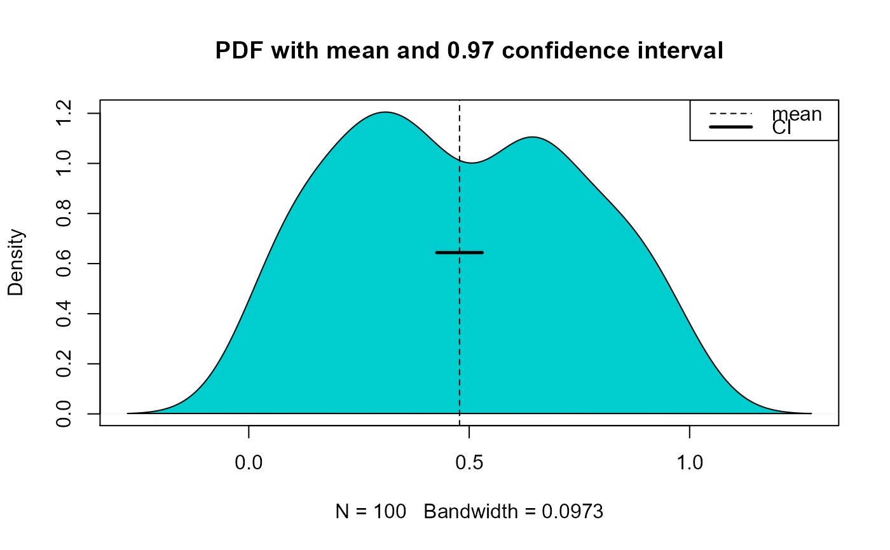

Calculates confidence interval for the mean or median of a distribution with unknown population variance
conf.interval(x, cl = 0.95, stat = "mean", std.error = TRUE)
| x | Vector to calculate confidence interval for |
|---|---|
| cl | Percent confidence level (default = 0.95) |
| stat | Statistic (mean or median) |
| std.error | Return standard error (TRUE/FALSE) |
lci Lower confidence interval value
uci Upper confidence interval value
mean If stat = "mean", mean value of distribution
mean Value of the mean or median
conf.level Confidence level used for confidence interval
std.error If std.error = TRUE standard error of distribution
Jeffrey S. Evans <jeffrey_evans@tnc.org>
#> $lci #> [1] 0.4263872 #> #> $uci #> [1] 0.5297245 #> #> $mean #> [1] 0.4780558 #> #> $conf.level #> [1] 0.97 #> #> $`std error` #> [1] 0.027157 #>